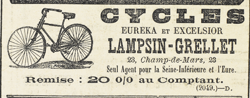

Et, s’asseyant à ses côtés, vivement il lui dit :
– Surtout, chère amie, ne gronde pas le prince Lavorneff, et ne crois pas qu’il m’ait laissé échapper une fois encore. Mais non, mais non, ce qu’ils ont emporté, ses amis et lui, c’est tout simplement un matelas et un mannequin de son, le tout roulé dans des couvertures. Quant à moi, je n’ai pas quitté cette ruelle où je m’étais réfugié, dès que tu avais abandonné ton poste derrière les volets.
Joséphine Balsamo demeurait inerte et aussi incapable de faire un geste que si on l’avait rouée de coups.
– Fichtre ! dit-il, tu n’es pas dans ton assiette. Veux-tu un petit verre de liqueur pour te remonter ? Je t’avoue d’ailleurs, Joséphine, que je comprends ton effondrement et je ne voudrais pas être à ta place. Tous les petits camarades partis… pas de secours possible avant une heure… et en face de toi, dans une chambre close, le dénommé Raoul. Il y a de quoi voir les choses en noir ! Infortunée Joséphine… Quelle culbute !
Il se baissa et ramassa la photographie de Clarisse.
– Comme elle est jolie, ma fiancée, n’est-ce pas ? J’ai remarqué avec plaisir que tu l’admirais tout à l’heure. Tu sais qu’on se marie dans quelques jours ?
La Cagliostro murmura :
– Elle est morte.
– En effet, dit-il, j’ai entendu parler de cela. Le petit jeune homme de tout à l’heure l’a frappée dans son lit, n’est-ce pas ?
– Oui.
– Un coup de poignard ?
– Trois coups de poignard, en plein cœur, dit-elle.
– Oh ! un seul suffisait, observa Raoul.
Elle répéta lentement, comme en elle-même.
– Elle est morte, elle est morte.
Il ricana.
– Que veux-tu ? Cela arrive tous les jours. Et ce n’est pas pour si peu que je vais changer mes projets. Morte ou vivante, je l’épouse. On s’arrangera comme on pourra… Tu t’es bien arrangée, toi.
– Que veux-tu dire ? demanda Joséphine Balsamo, qui commençait à s’inquiéter de ce persiflage.
– Oui, n’est-ce pas ? le baron t’a noyée une première fois. Une seconde fois tu as sauté avec ton bateau, le Ver-Luisant. Eh bien ! cela ne t’empêche pas d’être ici. De même ce n’est pas une raison parce que Clarisse a reçu trois coups de poignard dans le cœur pour que je ne l’épouse pas. D’abord es-tu bien sûre de ce que tu avances ?
– C’est un de mes hommes qui a frappé.
– Ou du moins qui t’a dit avoir frappé.
Elle l’observa.
– Pourquoi aurait-il menti ?
– Dame ! pour toucher les dix billets de mille que tu lui as remis.
– Dominique est incapable de me trahir. Pour cent mille francs, il ne me trahirait pas.
– En outre il sait bien que je vais le retrouver. Il m’attend avec les autres.
– Es-tu bien sûre qu’il t’attende, Josine ?
Elle tressaillit. Elle avait l’impression de se débattre dans un cercle de plus en plus étroit.
Raoul hocha la tête.
– C’est curieux comme nous avons fait, toi et moi, des boulettes vis-à-vis l’un de l’autre. Ainsi toi, ma bonne Joséphine, faut-il que tu sois naïve pour croire que j’aie pu couper une minute dans l’explosion du Ver-Luisant, dans le naufrage Pellegrini-Cagliostro, et dans les bourdes racontées par le prince Lavorneff ! Comment n’as-tu pas deviné qu’un garçon qui n’est pas un imbécile, que tu as formé à ton école – et quelle école, Vierge Marie ! – lirait dans ton jeu comme dans une Bible ouverte.
« Trop commode, en vérité, le naufrage ! On est chargé de crimes, on a les mains rouges de sang, la police court après vous. Alors on fait couler un vieux bateau, et tout le passé de crimes, le trésor volé, les richesses, tout cela fait naufrage. On passe pour mort. On fait peau neuve. Et on recommence un peu plus loin sous un autre nom, à tuer, à torturer et à se tremper les mains dans le sang. À d’autres, ma vieille ! Pour moi, quand j’ai lu ton naufrage, je me suis dit :
« Ouvrons l’œil, et le bon ! Et je suis venu ici ! »
Après un silence, Raoul reprit :
– Voyons, Joséphine, mais ta visite était inévitable ! Et fatalement tu devais la préparer à l’aide de quelque complice. Fatalement le yacht du prince Lavorneff devait voguer un soir par ici ! Fatalement tu devais escalader l’échelle de perroquet par où l’on t’avait descendue sur un brancard ! Alors, quoi ! j’ai pris mes précautions, et mon premier soin fut de regarder, autour de moi, s’il n’y avait pas quelque figure de connaissance. Un compère, c’est l’enfance de l’art.
« Et, du premier coup, j’ai reconnu le sieur Dominique pour l’avoir vu, ce que tu ignorais, sur le siège de ta berline, à la porte de Brigitte Rousselin. Dominique est un loyal serviteur, mais que la peur des gendarmes et une volée de coups de bâton administrée par moi, ont assoupli au point que toute sa loyauté est désormais à mon service, et qu’il l’a prouvé en t’envoyant de faux rapports et des fausses clefs et en ouvrant sous tes pas, de concert avec moi, le traquenard où tu as trébuché. Bénéfice pour lui : les dix billets sortis de ta poche et que tu ne reverras jamais, car ton loyal serviteur est retourné au château, sous ma protection.
« Voilà où nous en sommes, ma bonne Joséphine. J’aurais, certes, pu t’épargner cette petite comédie et t’accueillir ici, directement, pour le simple plaisir de te serrer la main. Mais j’ai voulu voir comment tu dirigeais l’opération et, tout en restant dans la coulisse, j’ai voulu voir aussi comment tu apprendrais le soi-disant assassinat de Clarisse d’Étigues. »
Josine recula. Raoul ne plaisantait plus. Penché sur elle, il lui disait d’une voix contenue :
– Un peu d’émotion… à peine… c’est tout ce que tu as éprouvé. Tu as cru que cette enfant était morte, morte par ton ordre, et cela ne t’a rien fait ! La mort des autres ne compte pas pour toi. On a vingt ans, toute la vie devant soi… de la fraîcheur, de la beauté… Tu supprimes tout cela, comme si tu écrasais une noisette ! Aucun débat de conscience. Tu n’en ris certes pas… mais tu ne pleures pas non plus. En réalité tu n’y penses pas. Je me souviens que Beaumagnan t’appelait l’infernale créature ; désignation qui me révoltait. Pourtant le mot est juste. Il y a de l’enfer en toi. Tu es une sorte de monstre auquel je ne puis plus penser sans épouvante. Mais toi-même, Joséphine Balsamo, n’es-tu pas épouvantée par moments ?
Elle gardait la tête baissée, ses deux poings collés aux tempes, ainsi qu’elle faisait souvent. Les paroles impitoyables de Raoul ne provoquaient pas ce sursaut de rage et d’indignation qu’il attendait. Raoul sentit qu’elle était à l’un de ces moments de l’existence où l’on aperçoit le fond de son âme, où l’on ne peut pas se détourner de sa vision redoutable, et où les mots d’aveu s’échappent à votre insu.
Il n’en fut pas surpris outre mesure. Sans être fréquentes ces minutes-là ne devaient pas être très rares chez cet être déséquilibré, dont la nature, impassible à la surface, s’abîmait dans de telles crises nerveuses. Les événements se présentaient à elle d’une façon si contraire à ses prévisions, à l’apparition de Raoul était si déconcertante, qu’elle ne pouvait pas se redresser en face de l’ennemi qui l’outrageait si cruellement.
Il en profita, serré contre elle, et la voix insinuante :
– N’est-ce pas, Josine, tu es effrayée toi aussi, par moments ? N’est-ce pas, il arrive que tu te fais horreur ?
La détresse de Josine était si profonde qu’elle murmura :
– Oui… oui… quelquefois… mais il ne faut pas m’en parler… je ne veux pas savoir… Tais-toi… tais-toi…
– Mais au contraire, dit Raoul, il faut que tu saches… Si tu as l’horreur de tels actes, pourquoi les commettre ?
– Je ne peux pas faire autrement, dit-elle avec une lassitude extrême.
– Tu essaies donc ?
– Oui, j’essaye, je lutte, mais c’est toujours la défaite. On m’a appris le mal… je fais le mal comme d’autres font le bien… Je fais le mal comme on respire… On a voulu cela…
– Qui ?
Il entendit confusément ces deux mots :
« Ma mère » et reprit aussitôt :
– Ta mère ? L’espionne ? Celle qui a combiné toute cette histoire Cagliostro ?…